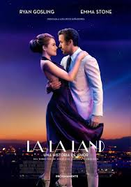
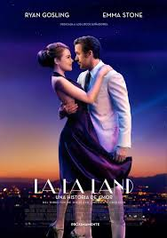

Filming
NFrom the beginning, Chazelle wanted the film's musical numbers to be filmed "head to toe" and performed in a single take, like those of the 1930s works of Fred Astaire and Ginger Rogers. He also wanted the film to emulate the widescreen, CinemaScope look of 1950s musicals such as It's Always Fair Weather. Consequently, the movie was shot on celluloid film (not digitally) with Panavision equipment in a widescreen format, but not true CinemaScope as that technology is no longer available.
Production
As a drummer, Damien Chazelle has a predilection for musical films. He wrote the screenplay for La La Land in 2010, when the film industry seemed out of reach for him. His idea was "to take the old musical but ground it in real life where things don't always exactly work out," and to salute creative people who move to Los Angeles to chase their dreams.He conceived the film when he was a student at Harvard University with his classmate, Justin Hurwitz. The two explored the concept in their senior thesis through a low-budget musical about a Boston jazz musician, Guy and Madeline on a Park Bench.Chazelle was moved by the tradition of 1920s city symphony films, such as Manhattan (1921) and Man With a Movie Camera (1929), that paid tribute to cities. After graduating, both moved to Los Angeles in 2010 and continued writing the script, but made a few modifications, such as altering the location to Los Angeles instead of Boston.
Casting
Initially, Miles Teller and Emma Watson were both set to star in the leads. Watson dropped out over a commitment to the 2017 musical adaptation of Beauty and the Beast, while Teller departed via long contract negotiations. Conversely, Gosling himself turned down a role as the Beast in Beauty and the Beast in favor of La La Land. Chazelle decided to make his characters somewhat older, with experience in struggling to make their dreams, rather than younger newcomers just arriving in Los Angeles.
Music
The songs and score for La La Land were composed and orchestrated by Justin Hurwitz, Chazelle's Harvard University classmate, who also worked on his two prior films.The lyrics were written by Pasek and Paul,[24] except for "Start a Fire", which was written by John Legend, Hurwitz, Marius De Vries and Angelique Cinelu.
A soundtrack album was released on December 9, 2016, by Interscope Records, featuring selections from Hurwitz's score and songs performed by the cast.
Storyline
Aspiring actress serves lattes to movie stars in between auditions and jazz musician Sebastian scrapes by playing cocktail-party gigs in dingy bars. But as success mounts, they are faced with decisions that fray the fragile fabric of their love affair, and the dreams they worked so hard to maintain in each other threaten to rip them apart.
Cast
-
 Ryan Gosling
Ryan Gosling
-
 Emma Stone
Emma Stone
-
 Amiee Conn
Amiee Conn
-
 Terry Walters
Terry Walters
Box Office
a La Land grossed $151.1 million in the United States and Canada and $295 million in other territories for a worldwide total of $446.1 million, against a production budget of $30 million.Deadline.com calculated the net profit of the film to be $68.25 million, when factoring together all expenses and revenues for the film, making it one of the top 20 most profitable releases of 2016.a La Land began its theatrical release with a limited release in five theaters in Los Angeles and New York City on December 9. It made $881,107 in its opening weekend, giving the film a per-theater average of $176,221, the best average of the year.In its second week of limited release, the film expanded to 200 theaters and grossed $4.1 million, finishing 7th at the box office. It was an increase of 366% from the previous week and good for a per-theater of $20,510.The following week, the film had its wide expansion to 734 theaters, grossing $5.8 million for the weekend (including $4 million on Christmas Day and $9.2 million over the four days), and finishing 8th at the box office.
Critical Response
La La Land was met with critical acclaim upon its release, with critics praising its screenplay, direction, performances, chemistry of Gosling and Stone, musical score and musical numbers.The review aggregation website Rotten Tomatoes gives the film an approval rating of 92% based on 377 reviews, with an average rating of 8.7/10. The site's critical consensus reads, "La La Land breathes new life into a bygone genre with thrillingly assured direction, powerful performances, and an irresistible excess of heart." On Metacritic, which assigns a normalized rating based on reviews, the film has a score of 93 out of 100, based on 53 critics, indicating "universal acclaim". It was the third- and sixth-highest scoring film released in 2016 on each respective site.Audiences polled by CinemaScore gave the film an average grade of "A–" on an A+ to F scale.
 
